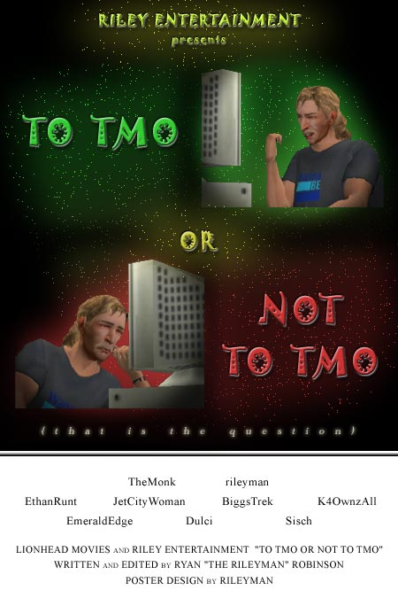

|
| Home | The Movie | Cast & Crew | Soundtrack | How-To Guide | Screenshots | Riley Entertainment |
|  |
An animated short by Ryan "the Riley Man" Robinson. In the tradition of Dr. Seuss and the 1940's "How-To" series by Disney, starring Goofy, comes To TMO or Not To TMO. Follow TMOMovieMaker as he attempts to create his first "The Movies" film. Assisted by the narrator, will he complete his film and gain TMO fame, or go completely crazy trying?!
This film is being created using "The Movies" videogame, and the "Stunts & Effects" expansion pack.
Last updated April 4, 2015. |